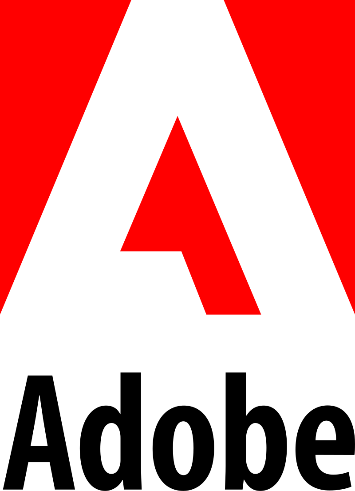
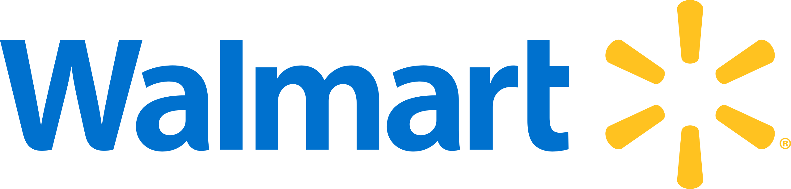
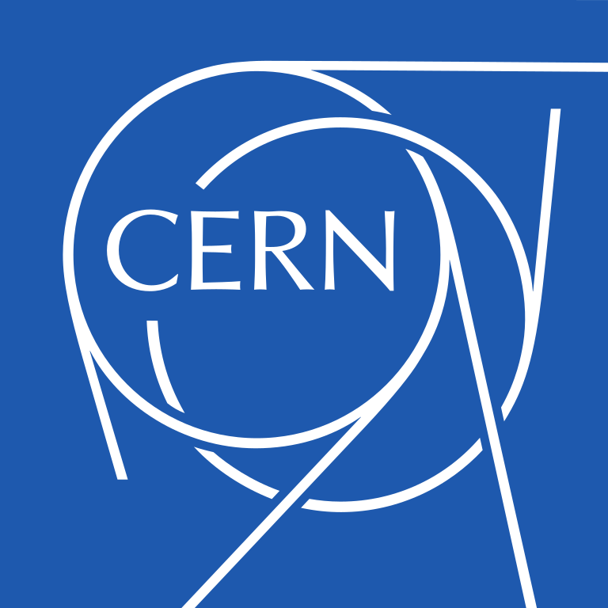

Md Sadikul Islam
Red Team Researcher
Address: Asad Avenue, Mohammadpur, Dhaka-1207, Bangladesh
Email: akash [at] beetles.io
About Me
I am a passionate Red Team Researcher and cybersecurity professional currently leading offensive simulations and on-premises red teaming at Beetles Cyber Security Ltd. Alongside my work, I am pursuing a BSc in Computer Science and Engineering at Uttara University. My core focus lies in Penetration Testing, Red Teaming, Risk Management, SecOps, and the emerging field of LLM/AI Security.
With a proven track record of uncovering critical vulnerabilities (including multiple assigned CVEs) and holding advanced certifications like eWPTX, I thrive on tackling complex security challenges. Beyond my day-to-day work, I am deeply committed to the cybersecurity community—serving on advisory boards, organizing events, speaking at conferences, and authoring CTF challenges to help mentor the next generation of security researchers.
I Hacked



Experience
Red Team Researcher
Beetles Cyber Security Ltd.
Dates: Dec 2024 - Present
- Lead offensive simulations across network, web, API, mobile, Active Directory, and LLM/AI surfaces
- On-premises red teaming assessments in bigger customer networks
- Collaborating on the development of an internal AI/LLM platform to enhance and strengthen red team operations.
- Document and report findings and provide recommendations for mitigating vulnerabilities
- Collaborate with the R&D and sales teams to ensure all security requirements are fulfilled
Penetration Tester
PentesterSpace
Dates: Jun 2022 - Dec 2023
- Executed network, API, and web application assessments uncovering critical vulns
- Delivered detailed exploit narratives and mitigation plans to engineering teams
- Provided subject matter expertise during live incident response and remediation cycles
Skills & Tools
Burp Suite Pro · OWASP ZAP · Cobalt Strike · Acunetix · Nuclei · Amass · Assetfinder · dirsearch · WPScan · Hashcat · SQLmap · Metasploit · MassDNS · Gau · Postman · MobSF · Drozer · reFlutter · Frida · Jadx · Nmap · Shodan · tcpdump · OpenVAS · Nessus · n8n · PyTorch · TensorFlow · Docker · gitleaks · CloudMapper · s3-inspector · Trivy · Python · Bash · PowerShell · HIPAA · NIST - SP 800-53 & SP 800-115 · GDPR
Education
Uttara University
BSc in Computer Science & Engineering
Dates: 2022 - Present
- Strong foundation in computer science theory and engineering principles
- Practical skills in programming, software development, and system design
- Advanced studies in computer security and machine learning practices
Relevant Coursework: Computer Security · Software Engineering · Machine Learning · Database Systems · Algorithm Design · Communication Skills
Certifications
- Web Application Penetration Tester eXtreme (eWPTX) — Verify credential
- Foundations of Operationalizing MITRE ATT&CK — Verify credential
- Certified AppSec Practitioner (CAP) — Verify credential
Public Talks
- Inside the Mind of a Hacker: A Guided Tour of Penetration Testing - IIUC Cyber Security Club 2025
- Pentest 101: A Practical Guide to Penetration Testing - RedSentry Hacked101, UITS 2025
- Hunting APT32: Inside the Cyber Shadows of Elite Hackers - Phoenix Summit 2025
- Breaking Barriers: The Invisible Threat to Web Applications - BugHunt 2024
- The Ultimate Blueprint for Account Takeover - RUET CyberFest 2024
CVE Contributions
- CVE-2024-46226 — Stored cross site scripting (XSS) vulnerability on HelpDeskZ — HelpDeskZ
- CVE-2020-24061 — XSS Vulnerability on Firewall menu in Control Panel on KASDA KW5515 — Kasda Networks Inc.
- CVE-2025-25191 — Stored XSS Vulnerability via user's name field on Group Office — Intermesh
- CVE-2025-27412 — Authenticated Reflected Cross Site Scripting (XSS) Vulnerability on Redaxo — Yakamara Media GmbH & Co. KG
- CVE-2025-27411 — An Arbitrary File Upload vulnerability exists on Redaxo — Yakamara Media GmbH & Co. KG — Co. KG
Community and Professional Services
- Lifetime Member, Error Squad - Cyber Security Researchers, 2018 – present
- Advisory Board, Cyber Security Club Uttara University, 2024 – 2025
- Strike Force Member, Yogosha, 2023 – 2025
- Organizer, Phoenix Summit, 2024
- Volunteer (CTF Author), FlagHunt, 2023
- Volunteer (CTF Author), RUET Cyber Fest, 2024
- Volunteer (CTF Author), RedSentry, 2025
- Volunteer (CTF Author), Cyber Invasion, 2025
- Host (Panel Discussion), Uttara University CyberCon25, 2025
- Volunteer (Anti Cheat), HackerOne BugHunt, 2026